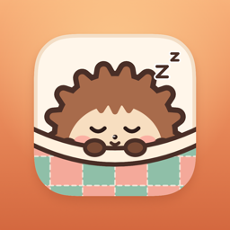

Snug privacy
Last updated September 29, 2026
Snug is a cozy logic-puzzle game made by one person. It has no ads, no accounts and no tracking across apps or websites. Snug never sells or shares data about you.
What stays on your device
Your puzzle progress, streak, collected critters, settings and hint jar are stored on your iPhone. If you use iCloud, your progress is also kept in your own iCloud account so it follows you to a new phone. The developer can't see it.
Anonymous usage statistics
To learn what's working (for example, how many players finish the first lesson, which levels feel too hard, or how often the daily is solved), Snug sends anonymous usage signals to TelemetryDeck, a privacy-focused analytics service based in the EU. A signal says something like "level 12 was solved in 3 minutes with 1 hint", along with the app version, the iOS version, the device model, your country or region, whether you're in Snug Club, how far along you are (levels cleared, current streak), your Snug settings (such as music or the reminder) and whether you use a Snug widget.
Signals never include your name, email, Apple Account, advertising ID, location or IP address. The identifier they use is a random value that is hashed (scrambled) on your device, so it can't be linked back to you. The data is used only to improve Snug. It is never used for advertising, never combined with other data, and never sold.
You can turn this off any time in Snug ▸ Settings ▸ Privacy ▸ Share anonymous usage.
Game Center
If you're signed in to Game Center, your daily times, streak and level count are sent to Apple's Game Center for leaderboards and achievements, under Apple's own privacy policy.
Purchases
Snug Club subscriptions and the lifetime purchase are handled entirely by Apple. Snug never sees your payment details. The anonymous statistics above note that a purchase happened (which plan, and its price in US dollars) so the developer can see whether the game pays for itself. You can manage or cancel a subscription any time in the Settings app under your Apple Account.
Reminders
If you turn on the evening reminder, Snug schedules a notification on your device. Nothing is sent to a server.
The email list
If you join the email list on this website, your email address is kept by Kit, the service that sends Snug's emails. It's used only to email you about Snug, and it's never sold or shared. Kit notes whether an email was opened or a link in it was tapped. Every email has an unsubscribe link, and you can ask for your address to be deleted by writing to the address below.
Children
Snug doesn't knowingly collect personal information from anyone, including children.
Contact
Questions? Email hello@snugpuzzle.com.